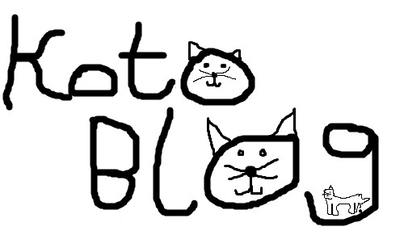

KotoBlog będzie blogiem, który będzie miał:
obrazki
filmiki
informacje
linki
porady
koty
i inne rzeczy!
O mnie
Jestem zwykłym dwunastoletnim dzieckiem. Interesuję się technologią (telefonami, komputerami, konsolami do
gier...)
Kolekcjonuję telefony, mam ich ponad 70. I uwielbiam koty.
Lubiłem je od dawna, ale to w zeszłorocznych wakacjach moje uwielbianie kotów się dopiero zaczęło. Byliśmy w
hotelu
w Grecji, i tam było dużo kotów, tak sobie chodzących.
Mogłem je głaskać. Dalej, kiedy poczytałem o tym, jak ktoś dostał szczeniaczka na Boże Narodzenie, to bardzo
chciałem kotka na urodziny. Zarezerwowaliśmy kotka dwa razy, ale
sprzedawcy w obu przypadkach zatrzymali umowe dopiero przed odbiorem. Raz, jeden kot, zatrzymany "bo dzieci go
kochają" został wystawiony na sprzedaż za dosyć drogo. I natrafiliśmy
na moje kociaki, bo nie chcieliśmy rezerwacji. I były dwa (miła niespodzianka) bo w każdej książce o kotach
mówią że
dwa koty to lepiej niż jeden. To prawda. Wzieliśmy dwie małe,
radosne kocie kluski do domu.
O moich kotkach
Mam dwa koty. Większy, starszy i rudy to Felix. A mniejsza, młodsza, w większości biała to Luna. Kiedy były
maluśkie, to Luna lubiła być na kolanach, a Felix sobie chodził i sprawdzał,
gdzie wszystko jest. One są na jednym z kocich zdjęć. Teraz oba lubią psocić i wchodzić na stoły.
Bardzo
kocham te koty. :-)
KotoBlog v0.4 został zaprojektowany i zrobiony przez Oliwiera Troć (2020 - 2020).
Tu nic nie ma, ale to jest fajnie że tą ciekawostkę znalazłeś/aś. Kocham moje koty.
Pozdrowienia, Oliwier
Troć.